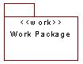
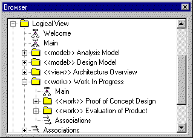

Standards:
<<work>> Package
 |
A temporary package containing work in progress. |
| Related Information: |
|
Topics
Naming Standard 
The general package naming standards apply to <<work>> packages (See Standards: Package Overview).
Diagramming Standards
These are ad-hoc work in progress packages – there are no standards for
documenting work packages. There should be no <<work>> packages in a build or
release of a model. They are purely transient packages containing work yet to be
officially integrated into the model.
Constraints
None
Examples
The screen shot of a Rose Browser below shows <<work>> packages being used
to contain work in progress. In this example a proof of concept is being designed
and a third party class library reverse engineered as part of a product evaluation.
 |